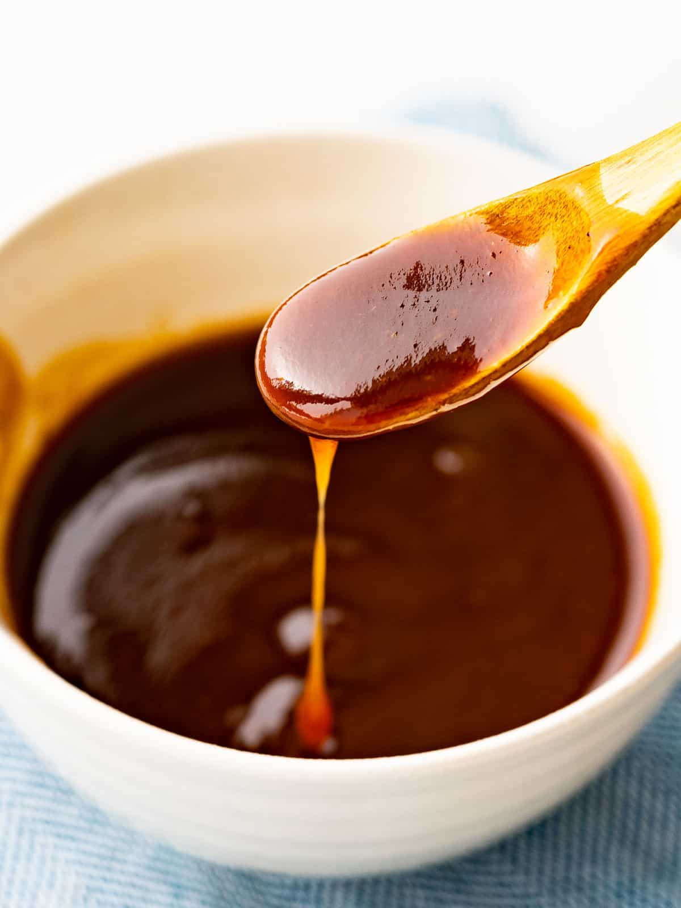

Chicken Katsu with Glaze

Description
Deep fried panko breaded chicken breast with an accompanying glaze.
The glaze is an a tangy savory sauce that pairs well with the katsu and a side of rice and salad of your choice.
Ingredients
For the glaze
- 1 Tbsp ketchup (Some ketchup are sweet, adjust sugar levels accordingly to your taste)
- 2½ tsp Worcestershire sauce
- 1½ tsp oyster sauce (If allergic to shellfish, you can use Lee Kum Kee Vegetarian Stir-Fry Sauce)
- 1⅛ tsp sugar (Add more sugar if the sauce is not sweet enough to your taste buds)
For the chicken katsu
- 4 Skinless, boneless chicken breast
- Salt and pepper to taste
- 2 Tbsp all-purpose flour
- 1 Large egg
- 1 Cup panko breadcrumbs
- 1 Cup of frying oil or as needed for deep frying
Step by step
Preparing the chicken
- Butterfly the chicken breast from the thickest point
- Place butterflied chicken breast between two plastic wrap
- Tenderize chicken breast with a meat hammer until the thickness reaches half an inch
- Salt the chicken liberally, cover it, and place it in the refrigerator for about 1 hour.
- Set up a breading station with three shallow bowls.
The first one with all-purpose flour,
the second one with eggs beaten with water,
and the third one with panko breadcrumbs.
- Place chicken in the flour, turn to coat it on all sides, then shake off any excess flour.
- Dip the floured chicken into the egg mixture, coat it well, then shake off any excess.
- Dredge the chicken in Panko breadcrumbs. Shake off excess.
- Preheat the oven to 200°F.
- Add enough vegetable oil or canola oil to a large cast-iron or stainless steel skillet to be ½-inch deep.
Heat the oil over medium-high heat to 350 degrees F.
- Deep fry the chicken in the pan and cook it for 1 to 2 minutes, just until the crust sets.
Flip the chicken over and cook it for 1 to 2 minutes. Continue cooking the chicken and flipping
it over until it is golden brown on both sides.
- Remove the chicken from the skillet. Drain excess grease by placing it on a clean wire rack over a baking sheet.
I don’t recommend using placing the chicken on paper towels because it will steam and the crust will get soggy.
Place the chicken in the 200°F oven to finish cooking (until the internal temperature is 165°F degrees when
checked with an instant-read thermometer).
- To your preference, cut the chicken katsu in thin strips or leave it as a whole and serve with sauce either on the side on directly on the katsu
Preparing the glaze
- Combine all the ingredients in a small bowl and whisk together until smooth. Adjust the sauce according to your liking.
